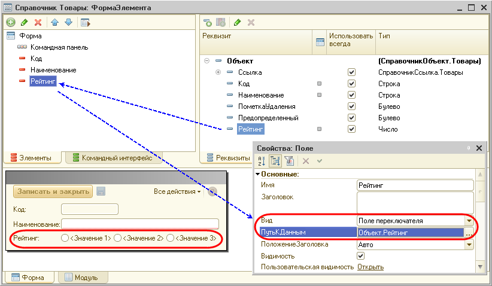
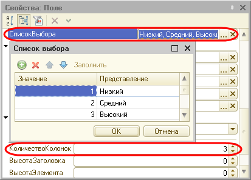

В 1С Предприятии 8.2 сначала нужно создать реквизит формы, который будет связан с элементом формы типа Поле переключателя и разместить его в форме. По умолчанию у переключателя создается три колонки, но можно самостоятельно установить свойство КоличествоКолонок.

Далее нужно задать свойство СписокВыбора, содержащее список значений. Каждое значение списка должно соответствовать переключателю. Если список не заполнен, поле переключателя не будет отображено.

Затем в обработчике события ПриИзменении переключателя можно проанализировать его значение. Например:
Процедура РейтингПриИзменении(Элемент)
Сообщить(строка(Объект.Рейтинг));
КонецПроцедуры
Скачать демонстрационный пример. Пример выполнен на версии платформы 1С:Предприятие 8.2 (8.2.9.260).
http://v8.1c.ru/metod/faq/dbimages/File/158.dt
Последнее обновление: 19.08.2009